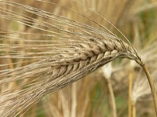

ろくじょうおおむぎ（六条大麦）の生産量
いちばん多くとれる都道府県
ろくじょうおおむぎが日本でいちばん多くとれるのは福井県です。1万2,100 tで、全国（5万4,100 t）の22%を占めます。

| 順位 | 都道府県 | 収穫量 | 全国に占める割合 |
|---|---|---|---|
| 1位 | 福井県 | 1万2,100 t | 22% |
| 2位 | 富山県 | 1万1,600 t | 21% |
| 3位 | 石川県 | 6,090 t | 11% |
この数字について
- 分類：イネ科
- 全国の収穫量：5万4,100 t
- この数字が表すもの：収穫量（畑や田でとれた重さ）
- 調査：作物統計調査 作況調査（麦・豆・工芸農作物ほか） 令和6年産
- 27県分を調査（調査していない県は順位に入りません）